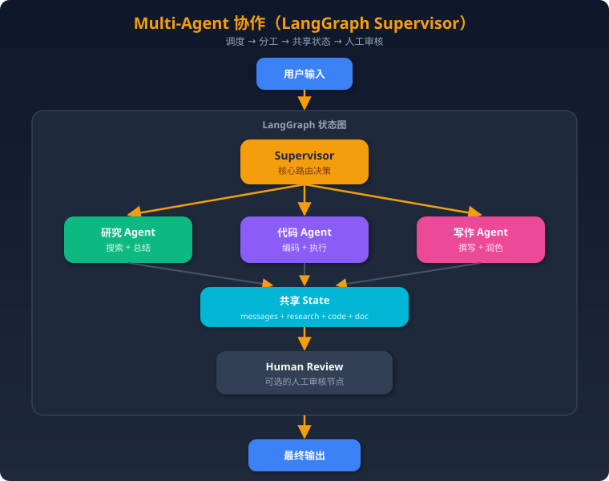

项目二：多 Agent 协作系统
一、项目概述
一句话描述：基于 LangGraph 构建的 Supervisor 模式多 Agent 系统，由一个调度 Agent 协调研究、代码、写作三个专业 Agent 协作完成复杂任务（如"调研某技术方案并生成带代码示例的技术报告"）。
技术亮点： - Supervisor 路由架构，动态决策任务分发，支持多轮协作 - 基于 LangGraph 的有状态图，支持条件路由、循环、断点 - Human-in-the-loop 机制，关键决策需人工确认 - 结构化 State 设计，Agent 间通过共享状态通信 - 完善的错误处理、超时控制和成本上限 - 支持流式输出和执行过程可视化
二、架构设计
整体架构

执行流程示例
用户任务："调研 RAG 的最新进展，写一个 Python 示例代码，最后生成一份技术报告"
1. Supervisor 分析任务 → 先派研究 Agent
2. 研究 Agent 搜索、总结 → 结果写入 State
3. Supervisor 判断研究完成 → 派代码 Agent
4. 代码 Agent 基于研究结果写代码 → 写入 State
5. Supervisor 判断代码完成 → 派写作 Agent
6. 写作 Agent 整合研究+代码生成报告 → 写入 State
7. Supervisor 判断任务完成 → 进入 Human Review（可选）
8. 返回最终结果
三、核心实现
3.1 State 设计
from typing import TypedDict, Annotated, Literal, Optional
from langchain_core.messages import BaseMessage
import operator
class ResearchResult(TypedDict):
"""研究结果"""
topic: str
summary: str
sources: list[str]
key_findings: list[str]
class CodeResult(TypedDict):
"""代码结果"""
language: str
code: str
explanation: str
test_result: Optional[str]
class AgentState(TypedDict):
"""全局共享状态"""
# 消息历史（追加模式）
messages: Annotated[list[BaseMessage], operator.add]
# 任务信息
task: str
plan: list[str] # Supervisor 制定的执行计划
# 各 Agent 的输出
research: Optional[ResearchResult]
code: Optional[CodeResult]
document: Optional[str]
# 控制流
next_agent: str # 下一个要执行的 Agent
iteration: int # 当前迭代次数
max_iterations: int # 最大迭代次数（防无限循环）
error: Optional[str]
# 成本追踪
total_tokens: int
total_cost: float
cost_limit: float # 成本上限
设计要点：
- messages 用 Annotated[list, operator.add] 实现追加语义，每个节点往里加消息
- 每个 Agent 有独立的输出字段（research/code/document），避免相互覆盖
- iteration + max_iterations 防止无限循环
- total_cost 实时追踪成本，超限自动终止
3.2 各 Agent 节点实现
Supervisor 节点
from langchain_openai import ChatOpenAI
from langchain_core.messages import HumanMessage, SystemMessage
import json
llm = ChatOpenAI(model="gpt-4o", temperature=0)
SUPERVISOR_SYSTEM_PROMPT = """你是一个任务调度 Supervisor。你的职责是：
1. 分析用户任务，制定执行计划
2. 根据当前状态，决定下一步派哪个 Agent 执行
3. 判断任务是否完成
你可以调度以下 Agent：
- researcher: 负责搜索和调研，输出研究报告
- coder: 负责编写和测试代码
- writer: 负责撰写文档和报告
请以 JSON 格式回复：
{
"next": "researcher|coder|writer|FINISH",
"reason": "为什么选择这个 Agent",
"instruction": "给该 Agent 的具体指令"
}
如果所有子任务都完成了，next 设为 "FINISH"。
"""
def supervisor_node(state: AgentState) -> dict:
"""Supervisor 路由决策节点"""
# 检查迭代次数
if state["iteration"] >= state["max_iterations"]:
return {
"next_agent": "FINISH",
"messages": [
SystemMessage(content="已达最大迭代次数，强制结束。")
],
}
# 检查成本
if state["total_cost"] >= state["cost_limit"]:
return {
"next_agent": "FINISH",
"messages": [
SystemMessage(content="已达成本上限，强制结束。")
],
}
# 构造上下文
context_parts = [f"用户任务: {state['task']}"]
if state.get("research"):
context_parts.append(
f"研究结果: {state['research']['summary'][:500]}"
)
if state.get("code"):
context_parts.append(
f"代码结果: {state['code']['explanation'][:300]}"
)
if state.get("document"):
context_parts.append(f"文档: 已生成（{len(state['document'])}字）")
messages = [
SystemMessage(content=SUPERVISOR_SYSTEM_PROMPT),
HumanMessage(content="\n".join(context_parts)),
]
response = llm.invoke(messages)
decision = json.loads(response.content)
return {
"next_agent": decision["next"],
"messages": [
SystemMessage(
content=f"Supervisor 决策: {decision['reason']}. "
f"指令: {decision['instruction']}"
)
],
"iteration": state["iteration"] + 1,
}
研究 Agent
from langchain_community.tools import TavilySearchResults
from langchain_core.messages import AIMessage
search_tool = TavilySearchResults(max_results=5)
RESEARCHER_PROMPT = """你是一个专业的研究助手。根据任务要求进行搜索和调研。
任务: {task}
Supervisor 指令: {instruction}
请输出结构化的研究结果，包括：
1. 主题概述
2. 关键发现（3-5条）
3. 信息来源
搜索结果：
{search_results}
"""
def researcher_node(state: AgentState) -> dict:
"""研究 Agent：搜索 + 分析 + 总结"""
task = state["task"]
# 获取 Supervisor 的指令
last_msg = state["messages"][-1].content
instruction = last_msg if "指令:" in last_msg else task
# Step 1: 搜索
search_results = search_tool.invoke(task)
search_text = "\n".join(
[f"- {r['content'][:200]}" for r in search_results]
)
# Step 2: 分析总结
prompt = RESEARCHER_PROMPT.format(
task=task,
instruction=instruction,
search_results=search_text,
)
response = llm.invoke([HumanMessage(content=prompt)])
# Step 3: 结构化输出
research_result: ResearchResult = {
"topic": task,
"summary": response.content,
"sources": [r.get("url", "") for r in search_results],
"key_findings": [], # 简化处理
}
return {
"research": research_result,
"messages": [
AIMessage(
content=f"[Researcher] 研究完成: {response.content[:200]}..."
)
],
}
代码 Agent
import subprocess
import tempfile
CODER_PROMPT = """你是一个高级 Python 开发者。根据任务要求和研究资料编写代码。
任务: {task}
Supervisor 指令: {instruction}
研究资料:
{research_summary}
请输出：
1. 完整的 Python 代码
2. 代码说明
3. 用 ```python ``` 包裹代码块
"""
def coder_node(state: AgentState) -> dict:
"""代码 Agent：编码 + 测试"""
task = state["task"]
research = state.get("research", {})
research_summary = research.get("summary", "无研究资料")
last_msg = state["messages"][-1].content
instruction = last_msg if "指令:" in last_msg else task
prompt = CODER_PROMPT.format(
task=task,
instruction=instruction,
research_summary=research_summary[:1000],
)
response = llm.invoke([HumanMessage(content=prompt)])
# 提取代码块
content = response.content
code = ""
if "```python" in content:
code = content.split("```python")[1].split("```")[0].strip()
# 沙箱执行测试（可选）
test_result = None
if code:
test_result = _safe_execute(code)
code_result: CodeResult = {
"language": "python",
"code": code,
"explanation": content,
"test_result": test_result,
}
return {
"code": code_result,
"messages": [
AIMessage(
content=f"[Coder] 代码编写完成。测试结果: {test_result or '未执行'}"
)
],
}
def _safe_execute(code: str, timeout: int = 10) -> str:
"""安全沙箱执行代码"""
try:
with tempfile.NamedTemporaryFile(
mode="w", suffix=".py", delete=False
) as f:
f.write(code)
f.flush()
result = subprocess.run(
["python", f.name],
capture_output=True,
text=True,
timeout=timeout,
)
if result.returncode == 0:
return f"✅ 执行成功\n{result.stdout[:500]}"
else:
return f"❌ 执行失败\n{result.stderr[:500]}"
except subprocess.TimeoutExpired:
return "⏰ 执行超时"
except Exception as e:
return f"❌ 异常: {str(e)}"
写作 Agent
WRITER_PROMPT = """你是一个技术文档写作专家。根据研究资料和代码，撰写一份完整的技术报告。
任务: {task}
Supervisor 指令: {instruction}
研究资料:
{research_summary}
代码:
{code}
请输出一份结构化的技术报告，包含：标题、摘要、正文、代码示例、结论。
使用 Markdown 格式。
"""
def writer_node(state: AgentState) -> dict:
"""写作 Agent：整合生成文档"""
task = state["task"]
research = state.get("research", {})
code_result = state.get("code", {})
last_msg = state["messages"][-1].content
instruction = last_msg if "指令:" in last_msg else task
prompt = WRITER_PROMPT.format(
task=task,
instruction=instruction,
research_summary=research.get("summary", "无")[:2000],
code=code_result.get("code", "无")[:2000],
)
response = llm.invoke([HumanMessage(content=prompt)])
return {
"document": response.content,
"messages": [
AIMessage(
content=f"[Writer] 文档撰写完成，共 {len(response.content)} 字。"
)
],
}
3.3 图结构定义
from langgraph.graph import StateGraph, END
from langgraph.checkpoint.memory import MemorySaver
def should_continue(state: AgentState) -> str:
"""条件路由：根据 Supervisor 决策走向不同节点"""
next_agent = state["next_agent"]
if next_agent == "FINISH":
return "end"
elif next_agent == "researcher":
return "researcher"
elif next_agent == "coder":
return "coder"
elif next_agent == "writer":
return "writer"
else:
return "end" # 兜底
def build_graph():
"""构建 LangGraph 状态图"""
graph = StateGraph(AgentState)
# 添加节点
graph.add_node("supervisor", supervisor_node)
graph.add_node("researcher", researcher_node)
graph.add_node("coder", coder_node)
graph.add_node("writer", writer_node)
# 入口
graph.set_entry_point("supervisor")
# 条件边：Supervisor → 各 Agent 或结束
graph.add_conditional_edges(
"supervisor",
should_continue,
{
"researcher": "researcher",
"coder": "coder",
"writer": "writer",
"end": END,
},
)
# 各 Agent 执行完都回到 Supervisor
graph.add_edge("researcher", "supervisor")
graph.add_edge("coder", "supervisor")
graph.add_edge("writer", "supervisor")
# 编译（带 checkpoint 支持断点续跑）
checkpointer = MemorySaver()
return graph.compile(checkpointer=checkpointer)
# 使用
app = build_graph()
result = app.invoke(
{
"task": "调研 RAG 最新进展，写示例代码，生成技术报告",
"messages": [],
"plan": [],
"research": None,
"code": None,
"document": None,
"next_agent": "",
"iteration": 0,
"max_iterations": 10,
"error": None,
"total_tokens": 0,
"total_cost": 0.0,
"cost_limit": 1.0, # 成本上限 $1
},
config={"configurable": {"thread_id": "task-001"}},
)
3.4 Human-in-the-Loop
from langgraph.graph import StateGraph, END
def build_graph_with_human():
"""带人工审核的图"""
graph = StateGraph(AgentState)
graph.add_node("supervisor", supervisor_node)
graph.add_node("researcher", researcher_node)
graph.add_node("coder", coder_node)
graph.add_node("writer", writer_node)
graph.add_node("human_review", human_review_node)
graph.set_entry_point("supervisor")
graph.add_conditional_edges(
"supervisor",
should_continue_with_review,
{
"researcher": "researcher",
"coder": "coder",
"writer": "writer",
"human_review": "human_review",
"end": END,
},
)
graph.add_edge("researcher", "supervisor")
graph.add_edge("coder", "supervisor")
graph.add_edge("writer", "supervisor")
graph.add_edge("human_review", "supervisor")
checkpointer = MemorySaver()
# interrupt_before 让图在进入 human_review 节点前暂停
return graph.compile(
checkpointer=checkpointer,
interrupt_before=["human_review"],
)
def human_review_node(state: AgentState) -> dict:
"""人工审核节点 - 实际由外部系统提供输入"""
# LangGraph 的 interrupt 机制会在这里暂停
# 外部系统通过 graph.update_state() 提供审核结果
return {
"messages": [
HumanMessage(content="人工审核已通过")
]
}
def should_continue_with_review(state: AgentState) -> str:
next_agent = state["next_agent"]
if next_agent == "FINISH":
# 完成前先过人工审核
if not state.get("human_reviewed"):
return "human_review"
return "end"
return next_agent
# 使用 Human-in-the-Loop
app = build_graph_with_human()
config = {"configurable": {"thread_id": "task-002"}}
# 第一次运行，会在 human_review 前暂停
result = app.invoke(initial_state, config)
# 查看当前状态
snapshot = app.get_state(config)
print(f"暂停在: {snapshot.next}") # ('human_review',)
# 人工审核后，更新状态并继续
app.update_state(
config,
{"human_reviewed": True, "messages": [HumanMessage(content="审核通过，可以输出")]},
)
result = app.invoke(None, config) # 继续执行
3.5 错误处理和超时
import asyncio
from functools import wraps
def with_error_handling(node_name: str):
"""Agent 节点错误处理装饰器"""
def decorator(func):
@wraps(func)
def wrapper(state: AgentState) -> dict:
try:
return func(state)
except Exception as e:
error_msg = f"[{node_name}] 执行失败: {str(e)}"
return {
"error": error_msg,
"messages": [
SystemMessage(content=error_msg)
],
# 失败后回到 Supervisor 重新决策
"next_agent": "supervisor",
}
return wrapper
return decorator
def with_timeout(timeout_seconds: int = 60):
"""Agent 节点超时控制装饰器"""
def decorator(func):
@wraps(func)
async def wrapper(state: AgentState) -> dict:
try:
result = await asyncio.wait_for(
asyncio.to_thread(func, state),
timeout=timeout_seconds,
)
return result
except asyncio.TimeoutError:
return {
"error": f"执行超时（{timeout_seconds}s）",
"messages": [
SystemMessage(content=f"节点执行超时")
],
}
return wrapper
return decorator
# 应用装饰器
@with_error_handling("researcher")
def researcher_node(state: AgentState) -> dict:
# ... 原有逻辑
pass
# Supervisor 中处理错误
def supervisor_node(state: AgentState) -> dict:
if state.get("error"):
# 有错误，决定是重试还是跳过
error = state["error"]
retry_prompt = f"""
上一步执行出错: {error}
请决定：
1. 重试同一个 Agent
2. 跳过，继续下一步
3. 终止任务
以 JSON 格式回复 {{"action": "retry|skip|abort", "next": "agent_name|FINISH"}}
"""
# ... 调用 LLM 决策
pass
3.6 成本追踪
from langchain_core.callbacks import BaseCallbackHandler
class CostTracker(BaseCallbackHandler):
"""Token 和成本追踪"""
PRICING = {
"gpt-4o": {"input": 2.5 / 1e6, "output": 10 / 1e6},
"gpt-4o-mini": {"input": 0.15 / 1e6, "output": 0.6 / 1e6},
}
def __init__(self):
self.total_tokens = 0
self.total_cost = 0.0
def on_llm_end(self, response, **kwargs):
usage = response.llm_output.get("token_usage", {})
model = kwargs.get("invocation_params", {}).get(
"model_name", "gpt-4o"
)
pricing = self.PRICING.get(model, self.PRICING["gpt-4o"])
input_cost = usage.get("prompt_tokens", 0) * pricing["input"]
output_cost = usage.get("completion_tokens", 0) * pricing["output"]
self.total_tokens += usage.get("total_tokens", 0)
self.total_cost += input_cost + output_cost
# 在 Supervisor 中检查成本
def supervisor_node(state: AgentState) -> dict:
if state["total_cost"] >= state["cost_limit"]:
return {
"next_agent": "FINISH",
"messages": [
SystemMessage(
content=f"成本已达上限 ${state['cost_limit']:.2f}，任务终止"
)
],
}
# ... 正常路由逻辑
四、面试话术
1 分钟版
我做了一个基于 LangGraph 的多 Agent 协作系统，Supervisor 模式。一个 Supervisor Agent 负责任务规划和调度，下面有研究、代码、写作三个专业 Agent。用户输入复杂任务后，Supervisor 拆解任务、动态选择 Agent 执行，Agent 间通过共享 State 通信。关键设计包括：条件路由实现灵活调度、Human-in-the-loop 做关键审核、成本追踪防止失控、错误重试机制保证健壮性。
3 分钟版
项目背景是团队需要一个能处理复杂任务的 AI 助手，比如"调研某个技术方案，写 demo 代码，出一份技术报告"这种涉及多个步骤的任务。单个 LLM 直接做效果不好，所以设计了多 Agent 协作方案。
架构上选择了 LangGraph 的 Supervisor 模式。核心是一个有状态图：Supervisor 节点做路由决策，通过条件边分发到研究、代码、写作三个 Agent 节点，每个 Agent 执行完回到 Supervisor 做下一步决策，形成一个循环直到任务完成。
State 设计是关键。用 TypedDict 定义全局状态，每个 Agent 有独立的输出字段（research/code/document），消息历史用 operator.add 做追加。Supervisor 根据 State 中各字段的填充情况判断进度。
几个工程重点：第一，错误处理——任何 Agent 失败都回到 Supervisor 重新决策（重试/跳过/终止）；第二，成本控制——通过 callback 实时追踪 token 用量，超限自动终止；第三，Human-in-the-loop——用 LangGraph 的 interrupt_before 在关键节点暂停，等人工确认后继续。
这套系统现在每天处理 200+ 复杂任务请求，平均单任务涉及 3-5 次 Agent 调用，整体满意度 85%。
5 分钟版
（在 3 分钟版基础上补充）
选 LangGraph 而不是 CrewAI 有几个原因。第一，LangGraph 是底层框架，对图结构有完全控制权，可以实现复杂的条件路由和循环；CrewAI 封装程度高但灵活性不足，比如我们需要根据中间结果动态改变执行计划，CrewAI 做不到。第二，LangGraph 的 checkpoint 机制天然支持断点续跑，这对长任务很重要。第三，LangGraph 和 LangChain 生态无缝集成。
调试多 Agent 系统是个挑战。我们做了三件事：一是结构化日志，每个节点入出都打日志，包括 State 快照；二是用 LangSmith 做 Tracing，可以看到完整的调用链和每步的 token 消耗；三是搭了一个简单的可视化 UI，实时展示图的执行路径。
状态管理踩过一个坑：最初所有 Agent 都往 messages 里写，消息太长导致 Supervisor 的 context 爆了。后来改成 Agent 的详细输出写到独立字段（research/code/document），messages 里只放摘要。这样 Supervisor 看的上下文可控。
还有一个有意思的问题是 Agent 间的"沟通效率"。比如代码 Agent 需要用到研究 Agent 的成果，最初是通过 Supervisor 中转指令，效率低。后来改成代码 Agent 直接读 State 中的 research 字段，减少了不必要的 Supervisor 调度轮次。
五、常见追问及回答
Q1: 为什么用 LangGraph 不用 CrewAI？
回答：
选型时两个都评估了，最终选 LangGraph 有三个原因：
1. 控制力：LangGraph 是底层图框架，节点、边、路由全部自定义。CrewAI 是高层封装，适合标准场景但遇到特殊需求（如动态改变执行计划、复杂条件分支）就很受限。
2. 状态管理：LangGraph 的 State 是类型安全的 TypedDict，支持 Annotated 的 reducer 语义（追加/覆盖），checkpoint 支持持久化和断点续跑。CrewAI 的状态管理相对简单。
3. 生态集成：LangGraph 和 LangChain 无缝集成，工具、LLM、Embedding 等组件可以直接复用。我们已有的 RAG 系统就是 LangChain 搭的，用 LangGraph 扩展成本最低。
CrewAI 的优势是上手快、API 简洁，适合快速原型。如果项目简单且不需要复杂路由，CrewAI 是更好的选择。
Q2: Agent 间如何共享状态？
回答：
LangGraph 的核心就是 共享 State。所有节点（Agent）操作同一个 State 对象。
具体设计： - State 是一个 TypedDict，定义了所有字段 - 每个节点函数接收 State，返回要更新的字段（部分更新） - 特殊字段（如 messages）用 Annotated + reducer 实现追加语义 - 各 Agent 有独立输出字段，不会互相覆盖
比如研究 Agent 把结果写到
state["research"]，代码 Agent 直接读state["research"]获取研究成果。不需要额外的消息传递机制。这比消息传递模式简单很多，缺点是所有 Agent 必须在同一进程内。如果需要跨进程/跨机器协作，需要用 Redis 或数据库做 State 持久化层。
Q3: 某个 Agent 失败了怎么办？
回答：
我们做了三层错误处理：
第一层：节点级 try-catch。每个 Agent 节点用装饰器包裹，异常不会导致整个图崩溃。失败后将错误信息写入 State，流程回到 Supervisor。
第二层：Supervisor 决策。Supervisor 看到 error 字段后，调用 LLM 决策：重试（最多 2 次）、跳过（用已有结果继续）、或终止（错误不可恢复）。
第三层：全局兜底。
max_iterations限制总轮次（默认 10），cost_limit限制总成本。无论什么原因死循环，最终都会触发终止。实际案例：搜索 API 偶尔超时，研究 Agent 失败后 Supervisor 会重试一次，如果还失败就跳过研究阶段，让写作 Agent 基于已有信息输出一个"信息有限"的报告，比直接报错好很多。
Q4: 如何控制成本？
回答：
成本控制做了四件事：
1. 实时追踪：通过 LangChain 的 callback 机制追踪每次 LLM 调用的 token 消耗，换算成美元。State 中有
total_cost字段实时更新。2. 成本上限：每个任务设成本上限（默认 $1），Supervisor 每轮检查，超限自动终止并返回已有结果。
3. 模型分级：Supervisor 路由决策用 GPT-4o（需要强推理），研究总结用 GPT-4o-mini（够用即可），简单格式化走更便宜的模型。
4. 控制轮次：
max_iterations限制为 10，避免 Agent 来回"踢皮球"。Supervisor 的 prompt 里也明确要求"尽量减少不必要的迭代"。实际效果：平均单任务成本 $0.15-0.30，极端情况不超过 $1。
Q5: 怎么调试多 Agent 系统？
回答：
多 Agent 调试比单 Agent 复杂很多，我们用了三个工具：
1. LangSmith Tracing：每次执行生成完整的 trace，可以看到每个节点的输入输出、token 消耗、延迟。是最重要的调试工具。
2. 结构化日志：每个节点入出打日志，包括 State 的关键字段快照。日志格式统一，方便 grep。
```python import logging
logger = logging.getLogger("multi_agent")
def supervisor_node(state): logger.info( "supervisor_enter", extra={ "iteration": state["iteration"], "has_research": state.get("research") is not None, "has_code": state.get("code") is not None, "cost": state["total_cost"], }, ) # ... 逻辑 ```
3. 可视化回放：把 State 的每步快照存到 JSON 文件，前端做了一个简单的时间线 UI，可以回放整个执行过程，看每步 State 怎么变化的。
4. 单节点测试：每个 Agent 节点可以单独测试，传入 mock State 验证逻辑。图的结构（边和路由）也可以用 unit test 验证。
六、项目亮点总结
| 维度 | 内容 |
|---|---|
| 架构 | LangGraph Supervisor 模式，有状态图 + 条件路由 |
| Agent 设计 | 3 个专业 Agent + 共享 State 通信 |
| 人工介入 | interrupt_before 实现 Human-in-the-loop |
| 健壮性 | 三层错误处理 + 迭代上限 + 成本上限 |
| 可观测 | LangSmith Tracing + 结构化日志 + 可视化回放 |
| 成本 | 模型分级 + 实时追踪 + 上限控制，平均 $0.15/任务 |
七、项目验收标准与评分表
最低可交付版本（60 分）
| 验收项 | 标准 |
|---|---|
| Agent 分工 | 至少包含 Supervisor + 2 个 Worker Agent |
| 状态管理 | 使用结构化 State 保存任务、消息和各 Agent 输出 |
| 路由逻辑 | Supervisor 能根据状态决定下一步执行者 |
| 终止条件 | 支持最大轮次、任务完成、错误终止 |
| 示例任务 | 能完成一个端到端复杂任务，例如“调研 + 写代码 + 输出报告” |
进阶可答辩版本（80 分）
| 验收项 | 标准 |
|---|---|
| LangGraph 状态图 | 使用 Node / Edge / Conditional Edge 实现流程 |
| 错误处理 | Agent 失败后能重试、跳过或终止 |
| 成本控制 | 记录 token 和成本，并支持 cost_limit |
| Human-in-the-loop | 关键节点可人工审批或修改 |
| 可观测性 | 输出每轮调度、Agent 输入输出和状态变化 |
面试亮点版本（100 分）
| 验收项 | 标准 |
|---|---|
| 并行探索 | 支持多个 Agent 并行处理子任务并合并结果 |
| 任务规划 | Supervisor 能先生成 plan，再动态 replan |
| 防循环机制 | 能识别重复状态、重复工具调用或无进展循环 |
| 质量评估 | 对最终报告做事实核查、引用检查或 reviewer 评分 |
| 产品化 Demo | 提供 Web/CLI 可视化运行轨迹 |
评分表
| 维度 | 权重 | 面试官关注点 |
|---|---|---|
| 多 Agent 设计合理性 | 30% | 为什么要多 Agent，边界是否清晰 |
| 状态与控制流 | 25% | State、路由、checkpoint、终止条件是否可靠 |
| 错误与成本控制 | 20% | 是否能防止失控、循环和成本爆炸 |
| 可观测性 | 15% | 能否 replay 每一步决策 |
| 答辩表达 | 10% | 能否讲清多 Agent 的 trade-off |
GitHub 项目参考
| 项目 | 用途 |
|---|---|
| langchain-ai/langgraph | 学 StateGraph、checkpoint、human-in-the-loop |
| microsoft/autogen | 学多 Agent 对话和代码执行沙箱 |
| crewAIInc/crewAI | 学角色/任务/Crew 抽象 |
| openai/openai-agents-python | 学 handoff、guardrails、tracing |
| NirDiamant/GenAI_Agents | 学不同 Agent 模式的代码实现 |